内容要点
「拆原解理」硬核科普：空调不造冷，只把室内热搬到室外。从液体蒸发吸热类比切入，串起蒸汽压缩制冷循环四步（压缩→冷凝→节流→蒸发），解释为何能效比可大于 1，并对比定频／变频与热泵制热。片中标题原文为空，索引题取自简介与核心论断。
知识结构
洗澡／酒精发凉=蒸发抢热；空调把它工程化。
压缩升温→室外放热液化→节流降温→室内蒸发吸热。
定频猛踩猛刹；变频巡航更稳更省。
电驱动搬运故 COP>1；热泵一度电能搬数倍热。
空调是热泵式搬运工：压缩机负责让热「够资格」排到更热的室外；你付的电费是搬运费，不是造冷费。
00:00-01:20冷感来自蒸发抢热，不是凭空造冷
开场用「离天才只差一台空调」玩笑引入。原理说白了：液体蒸发会吸热。洗澡后冷、手臂抹酒精凉，都是周围热量被蒸发抢走。
空调找极易蒸发且吸热猛的制冷剂：室内蒸发吸热，室外再变回液体放热，循环往复——蒸汽压缩制冷循环。家用、汽车、中央空调核心都是这一套。
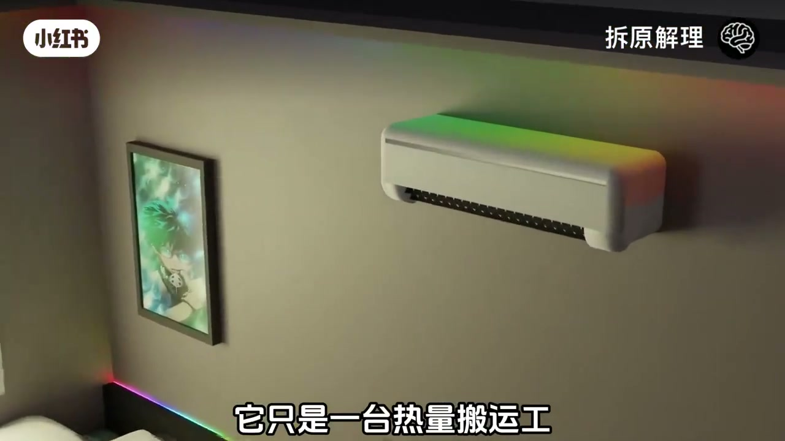
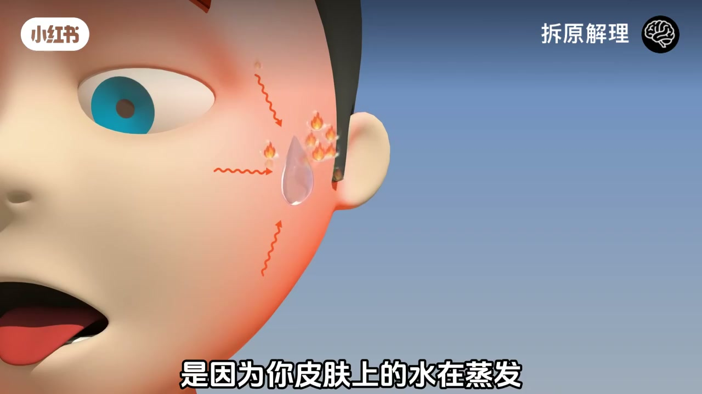
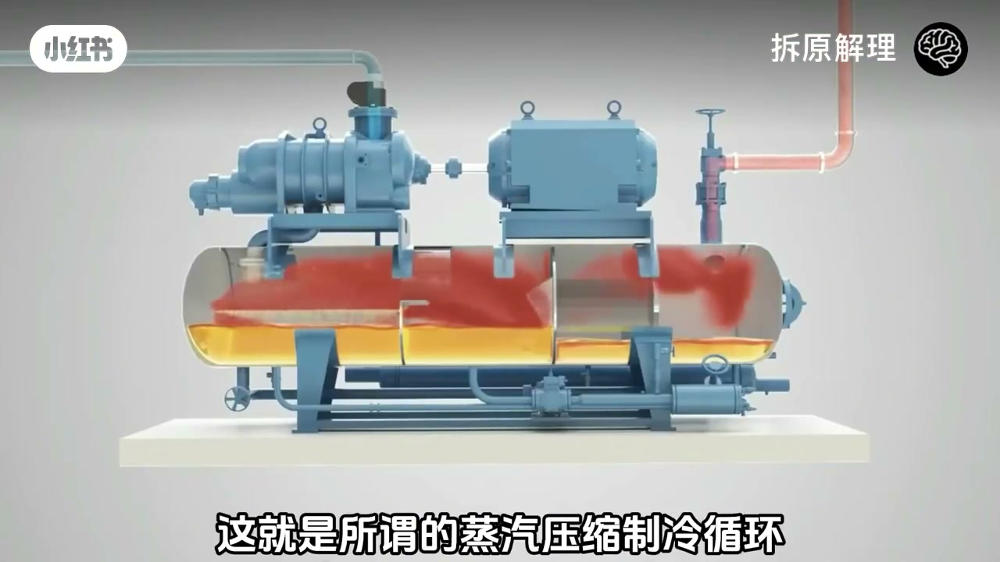
01:20-03:30压缩机：先把热拔到比室外更热
关键问题：制冷剂室内蒸发后怎么在室外变回液体？压缩机把低压气态暴力压成高温高压，温度可到七八十度，比四十度户外空气还热，于是冷凝器能把热放给室外——热永远从高温流向低温。
这一步不是「送冷」，是先让热变得够资格被室外接收。随后高压液体经膨胀阀节流，压力与沸点骤降，剧烈蒸发降温到零下区间，再进室内蒸发器吸走房间热量。
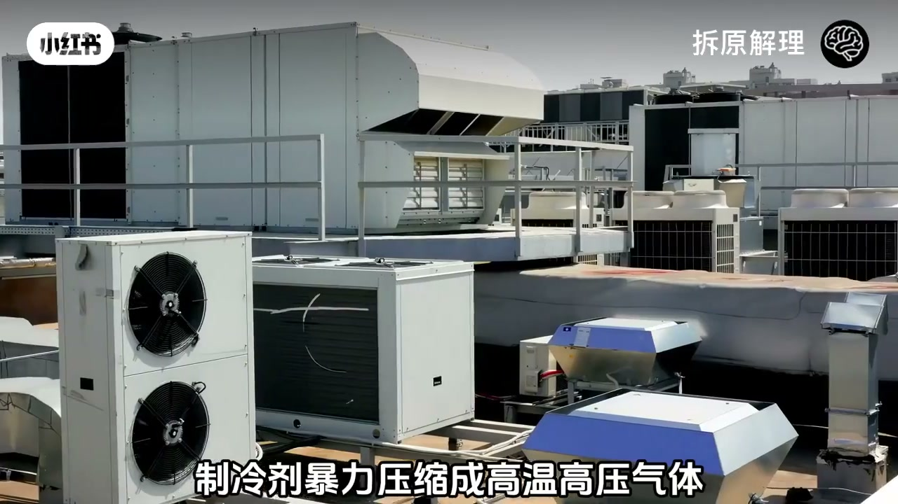
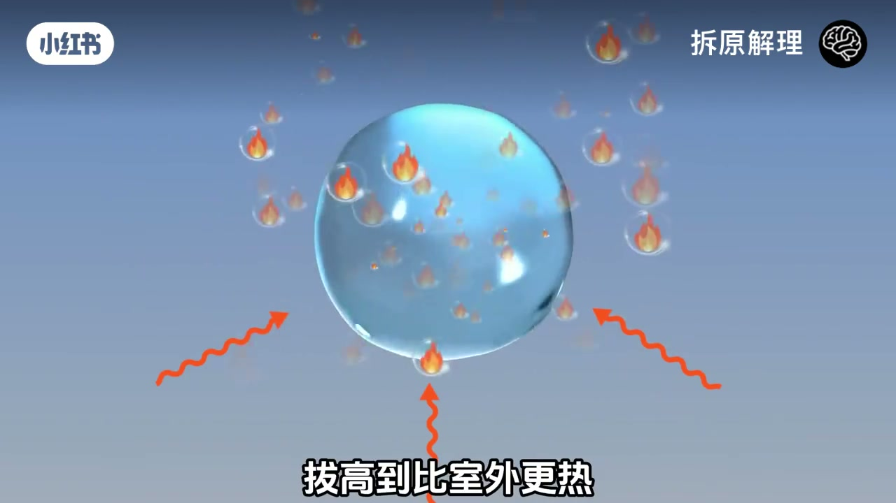
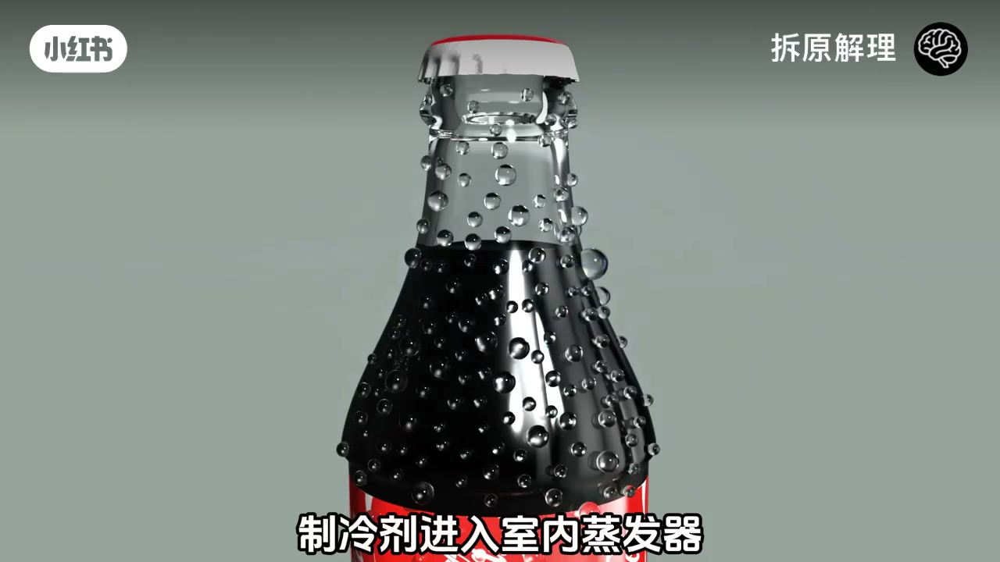
03:30-05:20定频开关 vs 变频巡航
四步周而复始。定频只有开／关，温度到了停、高了又启动，费电且波动大；变频可调转速，接近设定就慢转维持，像巡航对猛踩猛刹。
画面展示变频器电路与室内气流；冷凝水多了沿排水管流出——除湿是副产品，不是另一台魔法机器。
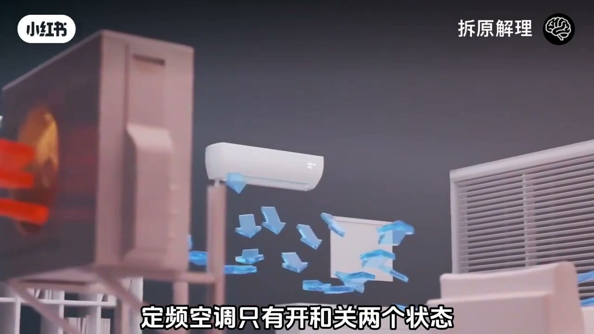
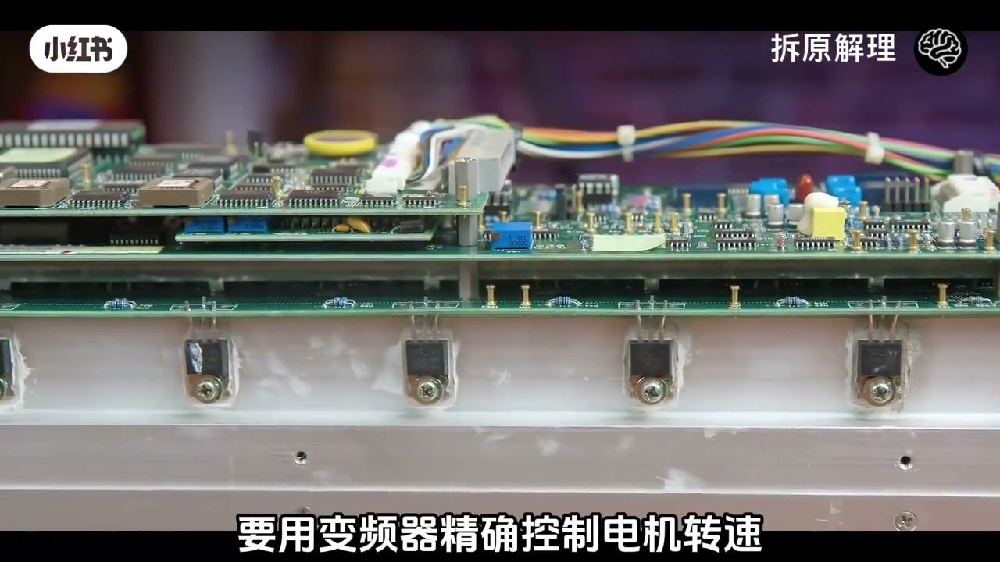
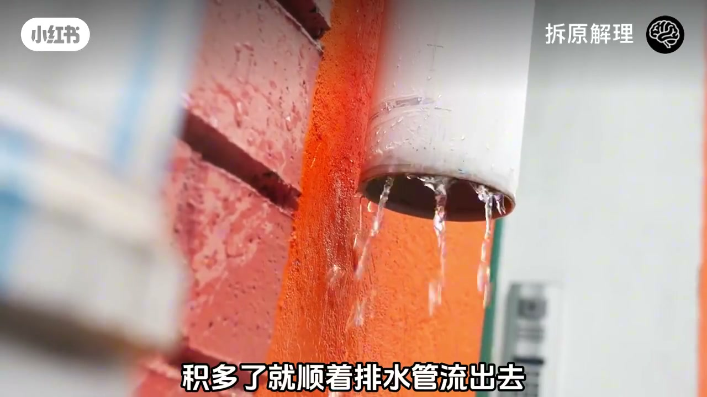
05:20-07:37能效比为什么能大于 1
电不是用来「制造冷」，而是驱动搬运。所以能效比可以大于 1：花一度电可搬相当于 3–5 度电的热量，不违反守恒——那些热本来就在空气里，电只是搬运费。
对比电暖气一度只能产一度热；空调热泵一度可从室外搬进数倍热。收束：遥控器启动的是相变、压缩、节流、变频与传热的完整循环，制冷剂每秒数米奔跑，把你不要的热一车车往外运。
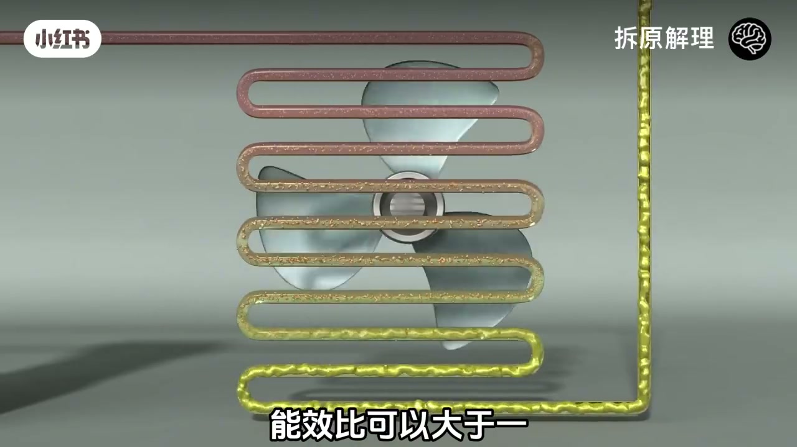
1：电是搬运费不是造冷费" loading="lazy">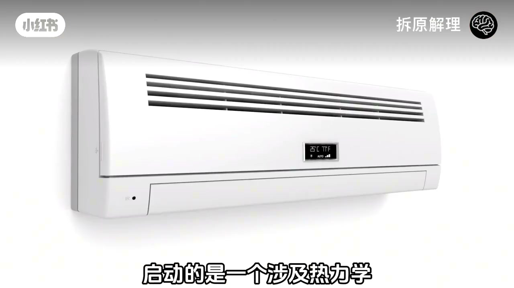
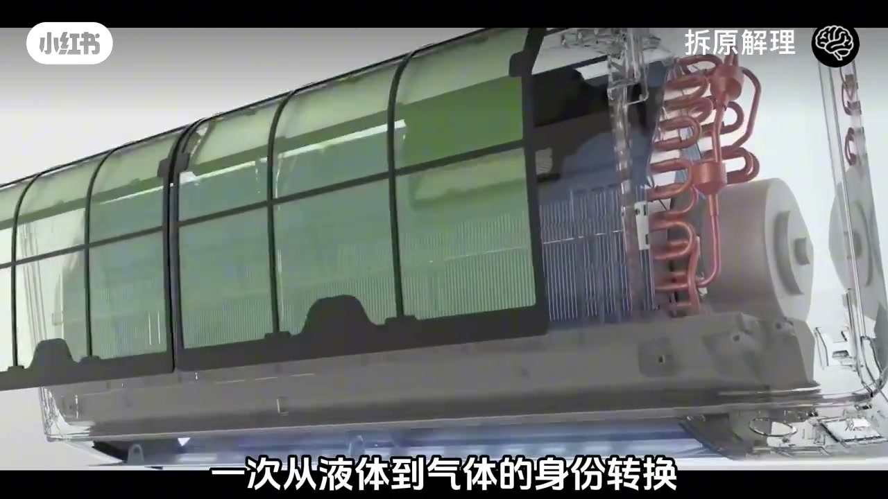
完整转录（136段）
以下文本由 Whisper medium 模型自动转录，可能存在少量识别误差，已尽可能修正。
防止痴呆最好的方式
看完你会发现
你离天才之间只差了一台空调
空调的原理
说白了就是利用液体蒸发
会吸热这个现象
你洗完澡出来觉得冷
不是因为浴室温度低了
是因为你皮肤上的水在蒸发
蒸发过程从你身体吸走了热量
你在手臂上抹一点酒精
觉得凉嗖嗖的也是一回事
液体变成气体需要能量
这个能量从哪来
从周围环境抢来
表现出来就是降温
空调就是把这个现象工程化了
找一种特别容易蒸发
蒸发时吸热特别猛的液体
致冷剂
让它在室内蒸发吸热
然后想办法把它在室外变回液体
把热放出来
如此反复循环
这就是所谓的蒸气压缩致冷循环
一百多年了
你家空调 冰箱 汽车空调
商场中央空调
无论多贵多高端
核心原理全是这一套
关键问题来了
你让致冷剂
在室内蒸发了
它把从室内蒸发器出来的
低压气态致冷剂
暴力压缩成高温高压气体
注意压缩不光升压
还会升温
压缩后的致冷剂温度
能到七八十度甚至更高
这时候它比室外空气热得多
所以到了室外冷凝气
它可以自然地把热量释放给四十度的空气
因为热量永远从高温流向低温
散热完成后
致冷剂在高压状态下冷却液化
重新变成液体
你看
压缩机做的事
就是把致冷剂的温度拔高
到比室外更热
这样热量才能从致冷剂
转移到室外空气
这一步不是送热
是先让热变得够资格
被室外接收
接下来
液态致冷剂要回到室内去蒸发
但这时候它是高压液体
直接放进蒸发器
它不会老老实实蒸发
所以在进入蒸发器之前
要经过一个节流装置
膨胀阀
这个阀把高压液体
突然释放到低压环境中
压力骤降
沸点骤降
致冷剂立刻开始剧烈蒸发
温度断崖式下跌到零度
甚至零下
然后这团极冷的致冷剂
进入室内蒸发器
室内的热空气被风机吹过
蒸发器表面
热量被致冷剂疯狂吸收
空气温度下降
你觉得凉了
致冷剂吸完热
变成低压气体
回到压缩机
又被压缩升温
送去室外散热
再节流
再蒸发
如此周而复始
四个步骤
L...n... ......
N and T N
病平空调 就是压缩机的转速可以调节
病平空调只有开和关两个状态
温度低了就停机
温度高了就重启
反复开关
不仅沸电
而且温度波动大
变频空调的压缩机
可以根据需要调整转速
快到温度了 就慢转维持
差的远就高速运转
就像开车
病频是一脚油门踩到底
再一脚煞车到底
病频是云速巡航
后者明显更省油 更舒服
现在家用空调的压缩机转速范围
.
从一个地方搬到另一个地方
它的能量消耗不是用来制冷的
而是用来驱动这个搬运过程的
这就是为什么空调的能效比可以大于1
你花一度电的电费
可以搬运相当于3-5度电的热量
它不违反能量守恒
因为那些热量本来就在空气里
电只是搬运费
所以空调是人类发明的
最高效的温度调节方式
没有之一
电暖气花一度电只能产一度电的热量
而空调热泵花一度电
能从室外搬运3-5度电的热量进屋
差距就是这么大
所以你看
你随手按下的那个遥控器
启动的是一个涉及热力学相变
高压压缩
流体节流
电力电子变频控制
和传热学的完整物理循环
一台空调安安静静的挂在你墙上
内部的制冷计正在以每秒几米的速度奔跑
每一圈都经历一次从零下到80度的温度跨越
一次从液体到气体的身份转换
它把你不要的热量一车一车的往外运
永不停歇